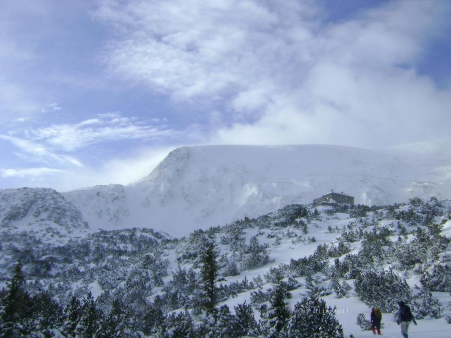
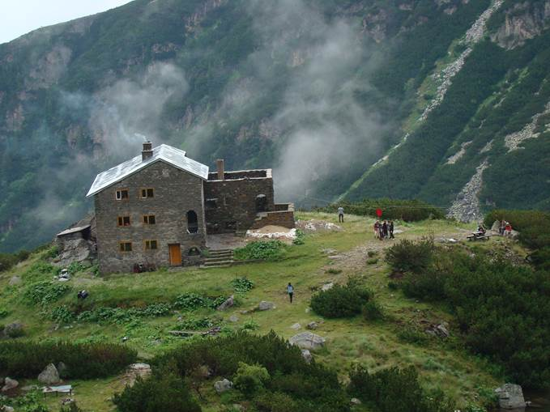
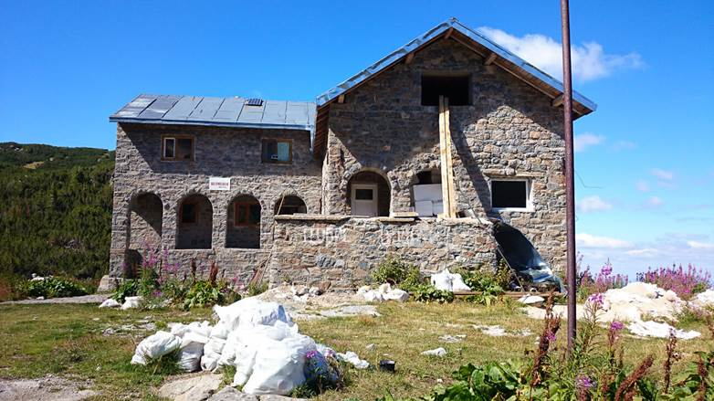

Белмекен е връх в Ибърския дял на Рила с височина 2626м. В близост се намира язовир "Белмекен" и високопланинската спортна база Белмекен. В съседство се намират Соколов връх и Червени връх. Сравнително лесно достъпен през лятото от юг, откъм язовир "Белмекен". Северният склон е отвесен, извисява се над циркуса Кутлините. През зимата склоновете му са лавиноопасни и при изкачване трябва да се използват коловите маркировки.
|
 |
|  |
Хижа Белмекен се разполага на брега на Равнивръшкото езеро. Старите имена на хижата са "Васил Коларов" и "Константин Панайотов". Представлява масивна триетажна сграда с кухня и туристическа столова. Хижата изгаря при пожар през лятото на 1997 година. В момента текат ремонтни дейности по възстановяването й. Хижата посреща гости при предварителна резервация през зимата и през цялото лято.
|
До хижа "Белмекен" се стига по маркирани туристически пътеки от: - Спортен комплекс "Белмекен" - 2:30 часа - вилна зона Костенец - 4:30 часа. Маркировката на места се губи в клековете; - хижа "Христо Смирненски" - 3:30 часа; - хижа Венетица - 4:00 часа; - хижа Гергиница - 5:30 часа; - хижа Заврачица - 6:30 часа; - заслон "Лева река" - 2:50 часа; - заслон "Кантон Крайна" - 1:50 часа; - вр. Белмекен - 1:30 часа.
|
 |